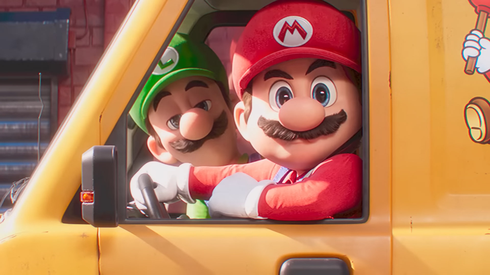
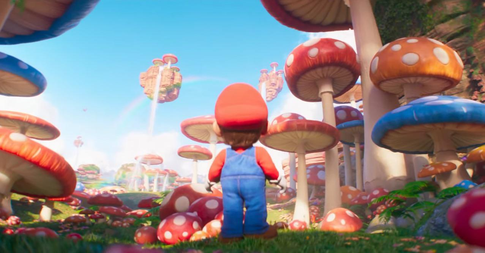
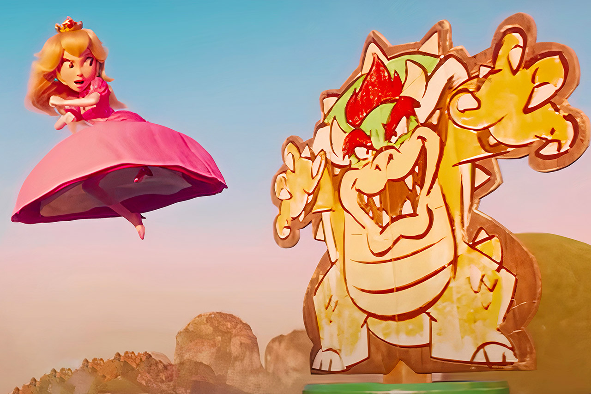
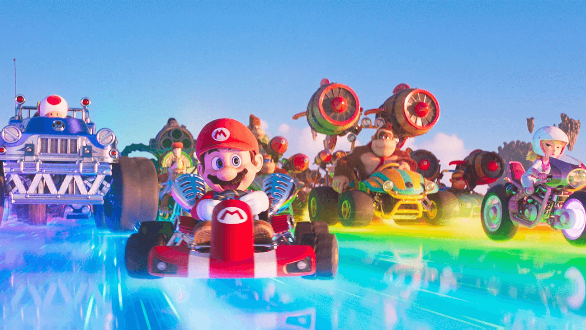
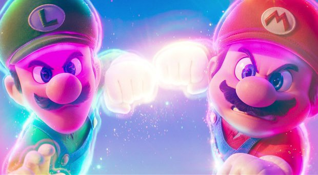
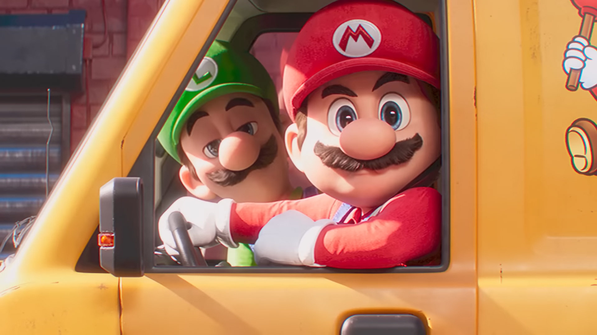
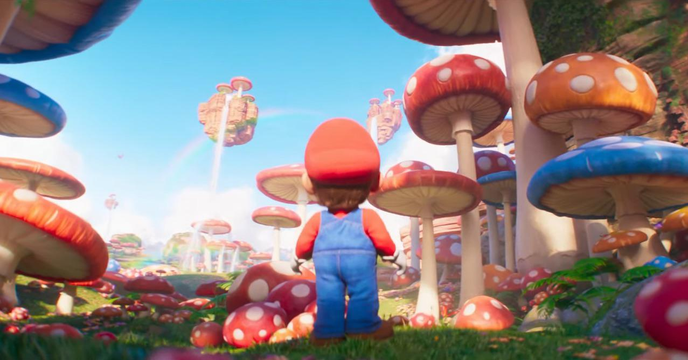
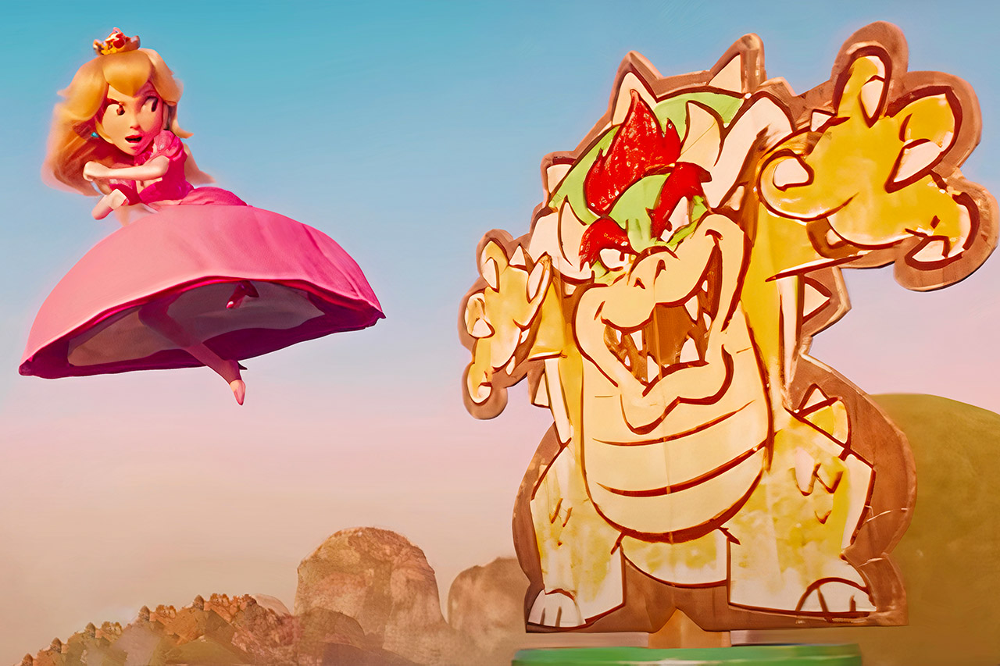
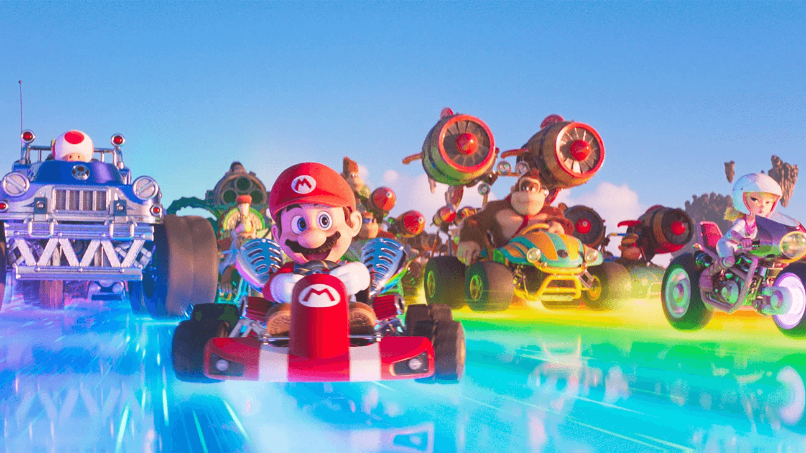
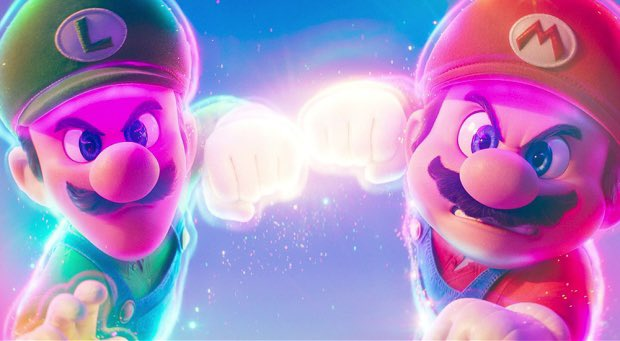

瑪利歐與路易吉在紐約修水管
兩兄弟是水管工，某天發現一條神秘的地下水管道。
進入蘑菇王國
意外掉進傳送管，瑪利歐來到蘑菇王國，路易吉卻被傳送到庫巴的地盤！
庫巴的計畫
庫巴集結軍隊，想征服蘑菇王國，並逼迫碧姬公主與他結婚。

碧姬公主的反擊
碧姬公主與奇諾比奧決定對抗庫巴，並訓練瑪利歐成為戰士。
彩虹道路上的戰鬥
瑪利歐、咚奇剛與同伴們在彩虹道路上對抗庫巴軍隊。
最終決戰
瑪利歐與路易吉聯手，使用超級星星的力量打敗庫巴！
兩兄弟是水管工，某天發現一條神秘的地下水管道。
意外掉進傳送管，瑪利歐來到蘑菇王國，路易吉卻被傳送到庫巴的地盤！
庫巴集結軍隊，想征服蘑菇王國，並逼迫碧姬公主與他結婚。
碧姬公主與奇諾比奧決定對抗庫巴，並訓練瑪利歐成為戰士。
瑪利歐、咚奇剛與同伴們在彩虹道路上對抗庫巴軍隊。
瑪利歐與路易吉聯手，使用超級星星的力量打敗庫巴！
